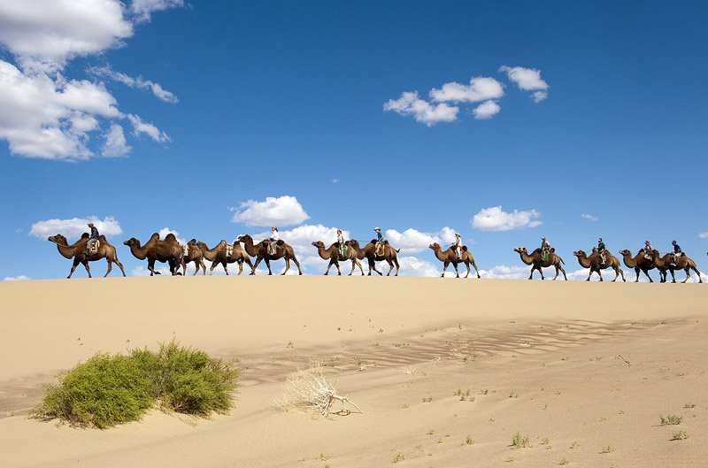

Mongolia
Mongolia is a landlocked country in East Asia, bordered by Russia to the north and China to the south. It covers an area of 1,564,116 square kilometres (603,909 square miles), with a population of just 3.3 million, making it the world's most sparsely populated sovereign state.
HOW TO GET THERE?
To travel from the United Arab Emirates (UAE) to Mongolia, you have several options. Here are some ways to reach Mongolia from the UAE:
Fly from Dubai to Ulaanbaatar:
The quickest way is to take a direct flight from Dubai International Airport (DXB) to Ulaanbaatar (UBN). The flight duration is approximately 16 hours and 49 minutes. Prices range from $507 to $1,3231.
Alternatively, you can fly from Sharjah to Altay (AAT) and then drive to Ulaanbaatar. This option takes approximately 23 hours and 18 minutes and costs between $374 and $5981.
Taxi to Abu Dhabi, then fly to Ulaanbaatar:
Take a taxi from Dubai to Abu Dhabi and then fly from Abu Dhabi International Airport (AUH) to Ulaanbaatar. The total travel time is approximately 15 hours and 51 minutes, with prices ranging from $478 to $1,043
WHEN TO GO THERE?
The best time to visit Mongolia depends on your preferences and the experiences you seek. Here are some considerations for different seasons:
Summer (June to August):
Warm Weather: Summer is the most popular time to visit Mongolia. The weather is warm, and the days are long.
Naadam Festival: If you’re interested in experiencing Mongolian culture, plan your trip around the Naadam Festival (usually in July). It’s a vibrant celebration of traditional sports, including wrestling, horse racing, and archery.
Wildlife and Nature: Summer is ideal for wildlife enthusiasts. You can spot wild horses (Przewalski’s horses), eagles, and other animals in the vast steppes and national parks.
Autumn (September to October):
Golden Landscapes: Autumn brings stunning golden landscapes as the leaves change color. The weather is still pleasant, and it’s a great time for photography.
Less Crowded: Compared to summer, autumn sees fewer tourists, allowing for a more peaceful experience.
Spring (April to May):
Wildflowers and Greenery: Spring is when the wildflowers bloom, and the grasslands turn green. It’s a beautiful time to explore the countryside.
Nomadic Culture: Witness the nomadic lifestyle as herders move their livestock to fresh pastures.
Winter (November to February):
Extreme Cold: Winters in Mongolia are harsh, with temperatures dropping well below freezing. However, if you’re up for an adventure, you can experience the frozen landscapes and unique winter activities.
Eagle Festivals: Attend the Eagle Festivals in western Mongolia, where Kazakh eagle hunters showcase their skills.
THINGS TO DO THERE
IExplore the Vast Steppes: Mongolia’s vast grasslands, known as the steppes, offer breathtaking views. Take a horseback ride or hike through these open spaces and immerse yourself in the serene beauty of the landscape.
Visit Ulaanbaatar: Mongolia’s capital city, Ulaanbaatar, is a mix of modernity and tradition. Explore the Gandan Monastery, Sukhbaatar Square, and the National Museum of Mongolia.
Stay in a Ger (Yurt): Experience the nomadic lifestyle by staying in a traditional Mongolian ger. These portable felt tents are cozy and provide a unique cultural experience.
Attend a Naadam Festival: If you visit during July, don’t miss the Naadam Festival. Watch thrilling competitions in wrestling, horse racing, and archery. It’s a celebration of Mongolian heritage.
.png)